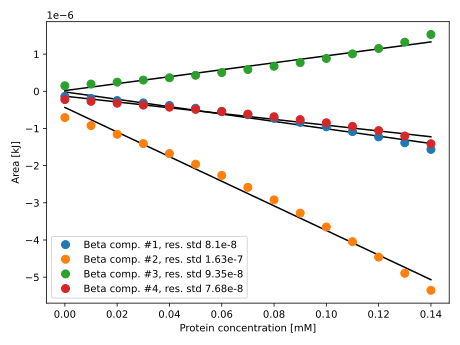

ANISPROU
ANalysis of ISothermal titration calorimetry data on sodium dodecyl sulphate mediated PRotein Unfolding.
Analysis of isothermal titration calorimetry (ITC) data on sodium dodecyl sulphate (SDS) mediated protein unfolding (ANISPROU) is a tool developed to globally fit an entire dataset and to extract thermodynamic values from this fit. ITC data on SDS mediated protein unfolding, at different protein concentrations, is used as an input for the fitting. The linearity of the features in the ITC data as a function of protein concentration allows the data to be fitted using a number of 3D beta functions, each representing a thermodynamic event. Besides the enthalpy of unfolding, the binding isotherm is also among the outputs.
Contents:
- ANISPROU
- Installation
- Tutorial
- Read the data
- Setup the inverse problem: fitting the enthalpy data
- Solve the inverse problem: find optimal mix of Beta functions
- Estimation of the binding isotherm
- Calculating areas and volumes
- Public API
- Other non-exported functions
Installation
To install the package simple enter into the package manager mode in Julia by typing "]" at the REPL prompt and then use add, i.e.,
(v1.6) pkg> add ANISPROUThe package will be automatically downloaded from the web and installed.
At the moment the package is not yet registered in the official Julia registry, so, to install it run the following in package mode:
(v1.6) pkg> add https://github.com/inverseproblem/ANISPROU.jlTutorial
In the following a step-by-step tutorial illustrating how to process the ITC data is shown. The complete code is also available in the folder examples.
Read the data
First of all, import the package and read the data. The function readallexperiments takes care of reading the measred data from a ASCII/text file produced by some common instruments.
However, the user can read/obtain the data in any other way, as long as it is possible to create a structure ITCObsData, which it is what is used in all the calculations (e.g., data fitting).
If using the readallexperiments function, the directory containing the data set and the file names must have a certain structure in order for the function reading the data to work. Such structure should be like the following example, where the directory name is the protein name IM7:
050_IM7.DAT
075_IM7.DAT
100_IM7.DAT
125_IM7.DAT
150_IM7.DATwhere the file names must follow the following rules:
- they must end with ".DAT" or ".dat"
- they must contain the name of protein (e.g., "IM7") in the file name
- the file format must be the same than the provided example (a commonly used instrument).
Two optional parameters can be passed to readallexperiments, namely scalfactor (defaulting to 0.004184 to convert Cal/mol to kJ/mol) which scales the enthalpy values, and discninitrows (defaulting to 0) which skips a certain number of initial rows from the data set because usually initial data are affected by strong instrument noise which could bias the subsequent fitting process. See readallexperiments to adapt it to a different case.
Next step is to extract the concentration of SDS and protein, the measured enthalpy and the indices for each experiments (idxdata) in the global data set. We obtain a dictionary, data in this case, containing all necessary information.
using ANISPROU
inpdir="../../examples/inputdata/" # directory containing input data
protein = "IM7" # protein name
data = readallexperiments(inpdir,[protein])Reading data from directory: ../../examples/inputdata/
Scaling enthalpy values by a factor 0.004184
Input file list:
050_IM7.DAT
075_IM7.DAT
100_IM7.DAT
125_IM7.DAT
150_IM7.DATThen instantiate the ITCObsData structure containing the measured (observed) enthalpy values along with other information. See ITCObsData.
sdscon = data[protein]["sdscon"]
procon = data[protein]["procon"]
enthalpy = data[protein]["enout"]
idxdata = data[protein]["idxdata"]
dobs = ITCObsData(protein=protein,enthalpy=enthalpy,idxdata=idxdata,sdsprotcon=[sdscon procon])ITCObsData([0.0, -0.05949610344, -1.6768066594400002, -2.6517443482400003, -3.4167277455200002, -3.32105058576, -2.86971330096, -2.4897795744, -2.4161389568800002, -2.3742685392 … -2.60446799336, -2.59400506456, -2.01259926968, -1.24096193168, -0.68109080824, -0.40938289424, -0.25536362008, -0.10109786648, 0.034799081120000006, -0.04193489312], UnitRange{Int64}[1:39, 40:78, 79:117, 118:156, 157:195], [0.0 0.05; 0.24462 0.04976; … ; 16.49974 0.12504; 16.89997 0.12443], "IM7")The x axis represents the SDS concentration, while the y axis the protein concentration. To plot the observed data one can use the function plotobsdata:
plotobsdata(dobs)QStandardPaths: XDG_RUNTIME_DIR not set, defaulting to '/tmp/runtime-runner' Another way of visualising the observed data is plotting each single experiment in 1D using plotsingleexperiments:
outdir="figs"
plotsingleexperiments(outdir,dobs)Setup the inverse problem: fitting the enthalpy data
Now define the parameters of the 2D Beta functions: the type of function for the mode, concentration parameter and amplitude (e.g., linear), the x and y limits in terms of minimum and maximum of SDS and protein concentrations. See ScaledBeta2DParams. Often enlarging by a little bit the domain on the x axis helps the Beta functions to better fit the data.
a = 0.99*minimum(dobs.sdsprotcon[:,1]) # lower bound for beta domain
b = 1.05*maximum(dobs.sdsprotcon[:,1]) # upper bound for beta domain
minprotcon = minimum(dobs.sdsprotcon[:,2])
# setting the maximum SDS concentration higher than the maximum experimental value!
maxprotcon = 1.05*maximum(dobs.sdsprotcon[:,2])
## define the parameters of Beta 2D functions
modefuny = "linear"
konfuny = "linear"
ampfuny = "linear"
betpar = ScaledBeta2DParams(modefuny=modefuny,konfuny=konfuny,ampfuny=ampfuny,a=a,b=b,ymin=minprotcon,ymax=maxprotcon)ScaledBeta2DParams(6, "linear", "linear", "linear", 0.0, 17.7449685, 0.04148, 0.1575, 1, 3, 5)Now we need to define a so-called starting model, i.e., a set of parameters for the Beta functions (mode, concentration and amplitude) which constitutes our initial guess in order to fit the measured enthalpy data.
The starting model is represented by a 2D array where the number of rows is the number of Beta functions components. Each column contains the set of parameters necessary to define a single Beta component, namely mode, confidence parameter and amplitude. If we set the all the functions for mode, concentration and amplitude to be linear (see above), then the parameters of the Beta functions (mode, confidence and amplitude) will vary along y (protein concentration) following the equation of a straight line passing through two poins:
\[ y = \dfrac{(y_2-y_1)}{(x_2-x_1)} (x-x_1) + y_1\]
where $y_1$, $y_2$, $x_1$ and $x_2$ are given as explained in the following. $x_1$ and $x_2$ represent the value of the Beta parameters at the minimum and maximum protein concentration $y_1$ and $y_2$ specified in the structure ScaledBeta2DParams, called ymin and ymax. Then the elements of the column vector represent the following:
- elements 1 and 2: value of the mode at the two points where the protein concentration equals
betpar.yminbetpar.ymax, part of the structureScaledBeta2DParams - elements 3 and 4: value of the confidence parameter at the two points where the protein concentration equals
betpar.yminbetpar.ymax, part of the structureScaledBeta2DParams - elements 5 and 6: value of the mode at the two points where the protein concentration equals
betpar.yminbetpar.ymax, part of the structureScaledBeta2DParams.
In the following we create a starting model use 4 Beta components. To add more (remove) components we can simple add more (remove) columns in mstart.
# Elements are: 2 for mode, 2 for the confidence parameter and
# 2 for the amplitude parameter
comp1 = [0.6, 1.5, 35.0, 30.0, -2.5, -5.0 ]
comp2 = [1.7, 4.8, 60.0, 40.0, -1.6, -4.0 ]
comp3 = [4.5, 10.0, 40.0, 30.0, 0.12, 0.16 ]
comp4 = [6.2, 15.3, 60.0, 40.0, -1.6, -2.0 ]
# mstart is a 2D array where each column represents one component
mstart = [comp1 comp2 comp3 comp4]To visually check the goodness of our first guess we can plot it using
plotinitialguess(betpar,dobs,mstart)Solve the inverse problem: find optimal mix of Beta functions
The solution of the inverse problem, that is, finding the set of model parameters which produces a "best" fit to the observed data is based on a constrained Newton method. The Newton method requires the computation of both the gradient of the misfit function with respect to model parameters and the Hessian matrix. Both gradient and Hessian matrix are calculated using automatic differentiation, specifically using the "forward mode" approach provided by the ForwardDiff.jl package.
First, we need to set the constraints for the Newton optimization. That can be done by specifying the lower and upper bounds for each parameter of each single component as following:
# lower constraints [confidence must be >2.0]
lcs1 = [betpar.a, betpar.a, 2.1, 2.1, -20.0, -20.0]
lcs2 = [betpar.a, betpar.a, 2.1, 2.1, -20.0, -20.0]
lcs3 = [betpar.a, betpar.a, 2.1, 2.1, 0.0, 0.0]
lcs4 = [betpar.a, betpar.a, 2.1, 2.1, -20.0, -20.0]
lowconstr = [lcs1 lcs2 lcs3 lcs4]
# upper constraints
ucs1 = [betpar.b, betpar.b, 500.0, 500.0, 0.0, 0.0]
ucs2 = [betpar.b, betpar.b, 500.0, 500.0, 0.0, 0.0]
ucs3 = [betpar.b, betpar.b, 500.0, 500.0, 10.0, 10.0]
ucs4 = [betpar.b, betpar.b, 500.0, 500.0, 0.0, 0.0]
upconstr = [ucs1 ucs2 ucs3 ucs4]In order to solve the inverse problem we need a covariance matrix (symmetric positive-definite) representing the uncertainty on the observed data. What is actually required by the software is the inverse of such covariance matrix invCd, i.e., if $\mathbf{C}_D$ is the covariance matrix on the observations, representing the noise on the data, we need to input the code $\mathbf{C}^{-1}_D$, sometimes called the precision matrix. Fine tuning the covariance/precision matrix for specific observed data known to be highly uncertain (or simply wrong) may significantly help the inversion process.
using LinearAlgebra
nobs = length(dobs.enthalpy)
stdobs = 0.2 .* ones(nobs) # standard deviation of the error on measured data
stdobs[1:2] .= 0.8 # specify higher uncertainty for first two points
stdobs[end-5:end] .= 0.5
invCd = inv(diagm(stdobs.^2)) # in this case a diagonal precision matrixNow we can run the Newton optimization algorithm to solve the inverse problem, provided also a starting model as explained in the previous section. The algorithm is from the package Optim.jl, specifically it is an interior-point primal-dual Newton algorithm . The optization is launched by the following code, where outdir is the directory where the output results will be written.
outdir = "output"
betamix = solveinvprob(betpar,dobs,invCd,mstart,lowconstr,upconstr,outdir)
Running optimization with IPNewton...
* Status: success
* Candidate solution
Final objective value: 1.809125e+02
* Found with
Algorithm: Interior Point Newton
* Convergence measures
|x - x'| = 0.00e+00 ≤ 0.0e+00
|x - x'|/|x'| = 0.00e+00 ≤ 0.0e+00
|f(x) - f(x')| = 0.00e+00 ≤ 0.0e+00
|f(x) - f(x')|/|f(x')| = 0.00e+00 ≤ 0.0e+00
|g(x)| = 2.57e-06 ≰ 1.0e-08
* Work counters
Seconds run: 10 (vs limit Inf)
Iterations: 39
f(x) calls: 123
∇f(x) calls: 123
Saving results in JLD2 to output/IM7_ITCinvresults.jld2
Saving results in text file to output/IM7_ITCinvresults.datThe output betamix is a structure of type BetaMix2D which holds the optimized parameters and other additional information. The results are saved in the directory defined by the variable output both in the HDF5 format, including all parameters of the inversion and as a simple set of text files (.dat).
Additional nonlinear constraints
The function solveinvprob accepts an additional optional parameter applynonlinconstr which, when set to true adds a set of nonlinear constraints to the Newton optimization. These constraints are a zero (or minimum) area for each Beta component at protein concentration equal to zero and some other constraints on the modes and confidence parameters requiring the solution to have modes within bound at protein concentration equal to zero and an increasing confidence parameter for decreasing protein concentration. The optional positive parameter constrarea defines (when applynonlinconstr=true) a constraint for the area of sum of the mix of Beta function at protein concentration equal to zero.
betamix = solveinvprob(betpar,dobs,invCd,mstart,lowconstr,upconstr,outdir,applynonlinconstr=true,constrarea=6.0)
Running optimization with IPNewton...
* Status: success
* Candidate solution
Final objective value: 1.905817e+02
* Found with
Algorithm: Interior Point Newton
* Convergence measures
|x - x'| = 0.00e+00 ≤ 0.0e+00
|x - x'|/|x'| = 0.00e+00 ≤ 0.0e+00
|f(x) - f(x')| = 0.00e+00 ≤ 0.0e+00
|f(x) - f(x')|/|f(x')| = 0.00e+00 ≤ 0.0e+00
|g(x)| = 1.81e+01 ≰ 1.0e-08
* Work counters
Seconds run: 21 (vs limit Inf)
Iterations: 50
f(x) calls: 121
∇f(x) calls: 121
Saving results in JLD2 to output/IM7_ITCinvresults.jld2
Saving results in text file to output/IM7_ITCinvresults.datPlotting results
Finally, it is possible to visualize the results as following:
outdir = "figs"
plotresults(betamix,dobs,mstart,outdir)The function plotsingleexperiments provides a way to show the fit of the solution to the single experiments, i.e., enthalpy for different initial protein concentrations.
# plot fit to single experiments
outdir="figs"
plotsingleexperiments(outdir,dobs,betamix)Another plot is that of parameter values versus protein concentration, where the black lines represent the bounds derived from the experimental data:
plotparamlines(betamix) It's also possible to plot Beta function components and their sum for fixed protein concentration, e.g.:
It's also possible to plot Beta function components and their sum for fixed protein concentration, e.g.:
plotbetacomp1D(betamix,0.148)Plot the 3D surface vs. observed data
It is possible to make a 3D plot showing the surface defined by the Beta mix and, in addition, the set of observed data as circles.
plotsurface3D(dobs,betamix,markersize=3500,savefig=true,outdir="figs")
Plotting 3D surface from Beta mix and measured data as circles.
Scaling factors are 100.0 for [IM7] and 2.0 for enthalpy.
[ Info: Makie/Makie is caching fonts, this may take a while. Needed only on first run!Estimation of the binding isotherm
The binding isotherm can be estimated by defining a set of points or "features" on the 2D Beta functions such that given features for a certain protein concentration can be related to corresponding features at different protein concentrations. Such features could be, for instance, the peaks of the curves or their inflection points. A set of the same feature for different protein concentrations should produce a trend close to a straight line, which can be used to estimate the binding isotherm. The angular coefficient of such straight line will then represent the binding number $N_{\rm bound}$ and the intercept the concentration of free SDS $[SDS]_{\rm free}$. The two are in fact related by the following relation:
\[ [\mathrm{SDS}]_{\rm total} = [\mathrm{SDS}]_{\rm free} + N_{\rm bound} [\mathrm{Protein}]\]
where $[...]$ represents the concentration.
Thus, to estimate the binding isotherm, we start by finding a set of features, in this case stationary and inflection points at given values of protein concentration (in this case 4 values):
ny = 4 # number of protein concentrations to investigate
protcon = collect(LinRange(betamix.betpar.ymin,betamix.betpar.ymax,ny)) # set of protein concentrations
statpts,inflpts = findcurvefeatures(betamix,protcon) # find featuresTo plot the found features one can do the following:
# plot found points/features
outdir = "figs"
plotfoundfeatures(betamix,protcon,statpts,inflpts,outdir)The next step involves selecting a subset of the found points to construct the binding isotherm: this can be done by looking at the previous plot and picking only desired points. The numbers on the plot nearby the found points correspond to the index in the array of found points.
# ===========================================
# Selection of local minima and maxima
selectstatpts = Vector{Array{<:Real,2}}(undef,0)
push!(selectstatpts, [ statpts[1][2] protcon[1];
statpts[2][2] protcon[2];
statpts[3][2] protcon[3];
statpts[4][2] protcon[4] ] )
push!(selectstatpts, [ statpts[2][3] protcon[2];
statpts[3][3] protcon[3];
statpts[4][3] protcon[4] ] )
push!(selectstatpts, [ statpts[1][3] protcon[1];
statpts[2][5] protcon[2];
statpts[3][5] protcon[3];
statpts[4][5] protcon[4] ] )
push!(selectstatpts, [ statpts[1][4] protcon[1];
statpts[2][6] protcon[2];
statpts[3][6] protcon[3];
statpts[4][6] protcon[4] ] )
# ===========================================
# Selection of inflection points
selectinflpts = Vector{Array{<:Real,2}}(undef,0)
push!(selectinflpts, [ inflpts[1][1] protcon[1];
inflpts[2][2] protcon[2];
inflpts[3][2] protcon[3];
inflpts[4][2] protcon[4] ] )
push!(selectinflpts, [ inflpts[1][2] protcon[1];
inflpts[2][3] protcon[2];
inflpts[3][3] protcon[3];
inflpts[4][3] protcon[4] ] )
push!(selectinflpts, [ inflpts[1][4] protcon[1];
inflpts[2][5] protcon[2];
inflpts[3][5] protcon[3];
inflpts[4][5] protcon[4] ] )Once we have a set of set of features we can estimate the best fitting straight lines for each set by performing a least squares linear regression with calcfreeSDSNbound.
# find the straight line by least squares
freeSDS,Nbound,resstdev = calcfreeSDSNbound(protcon,statpts,inflpts,selectstatpts,selectinflpts,outdir,dobs.protein) # do the linear regressionSaving binding isotherm data in JL2 to figs/IM7_ITCbindingisoth.jld2
Saving results in text file to figs/IM7_ITCbindingisoth.datresstedev is a vector containing the standard deviation of the residuals of the regression for each point of the binding isotherm.
Finally, the resulting binding isotherm is plotted with the following:
outdir = "figs"
plotbindisotherm(betamix,protcon,dobs,statpts,inflpts,freeSDS,Nbound,outdir,resstdev=resstdev)Calculating areas and volumes
Compute the area for each Beta component at requested protein concentration using area_enthalpy:
protcon = 0.08 # requested protein concentration
area,errarea = area_enthalpy(betamix,protcon) # compute area
println("Area at protein concentration $protcon for each component: \n$area, \nintegration error\n $errarea\n")Area at protein concentration 0.08 for each component:
[-7.281750276625282e-7, -2.9209969955488645e-6, 6.732398847454579e-7, -6.849130051866971e-7],
integration error
[2.1403273431041072e-15, 2.0275296638666627e-14, 8.37933219790935e-17, 1.2316369315042954e-15]It is also possible to calculate the area for each Beta component for a set of different protein concentrations and plot it using areasvsprotcon and plotareavsprotcon:
N = 15
protcons = collect(LinRange(0.0,0.14,N)) # set of protein concentrations
areas,erras,linfitres,resstdev = areasvsprotcon(betamix,protcons,outdir,protein)
plotareavsprotcon(protein,protcons,areas,linfitres,resstdev,outdir) # plot area as a function of protein concentrationSaving areas data in JLD2 to figs/IM7_ITCareasprotcon.jld2
### Protein IM7, area vs. protein conc. ###
Linear fit, Beta comp. #1, ang.coef.=-9.91389647110213e-6,
intecept=-1.7827713007291905e-8
Linear fit, Beta comp. #2, ang.coef.=-3.309414178152313e-5,
intecept=-4.3535599659236787e-7
Linear fit, Beta comp. #3, ang.coef.=9.350888784357902e-6,
intecept=1.9053520863971686e-8
Linear fit, Beta comp. #4, ang.coef.=-7.799798863794685e-6,
intecept=-1.32188791414875e-7
Alternatively, a function to plot the value of model parameters and areas as a function of protein concentration is available, plotparamlines
plotparamlines(betamix,protcons,areas)Compute the volume for all Beta components within requested bounds of protein concentration using volume_enthalpy:
minprotcon = betamix.betpar.ymin # lower bound for integral
maxprotcon = betamix.betpar.ymax # upper bound for integral
volume,errvol = volume_enthalpy(betamix,minprotcon,maxprotcon) # compute volume
println("Volume within bounds for each component: \n$volume, \nintegration error\n $errvol\n")Volume within bounds for each component:
[-1.1789989095598014e-7, -4.3417254497699103e-7, 1.1292077784420347e-7, -1.1166190040188133e-7],
integration error
[1.173617553170881e-15, 4.340670353466813e-15, 1.1281608712826411e-15, 1.1164456064654547e-15]Public API
General calculations
ANISPROU — ModuleANISPROU
Analysis of isothermal titration calorimetry (ITC) data on sodium dodecyl sulphate (SDS) mediated protein unfolding.
Exports
BetaMix2DITCObsDataScaledBeta2DParamsarea_enthalpyareasvsprotconcalcfreeSDSNboundfindcurvefeaturesplotareavsprotconplotbetacomp1Dplotbindisothermplotfoundfeaturesplotinitialguessplotobsdataplotparamlinesplotresultsplotsingleexperimentsplotsurface3DreadallexperimentssaveresultVTKsolveinvprobvolume_enthalpy
ANISPROU.readallexperiments — Functionreadallexperiments(inpdir::String, proteinnames::Vector{String}; scalfactor, discninitrows) -> Dict{Any, Any}
Real from ASCII files all observed/measured data from a set of experiments. It can read data for one or more proteins. The entalphy values are scaled by a factor given by the argument scalfactor, which defaults to 0.004184 (Cal/mol to kJ/mol).
Arguments
inpdir: directory containing the input dataproteinnames: array of strings containing the names of proteinsscalfactor=0.004184: scaling factor for enthalpy, defaults to 0.004184 (Cal/mol to kJ/mol)discninitrows=0: number of initial rows of the data set to discard. This is used to remove some initial data often affected by strong instrument noise which could bias the fitting process.
ANISPROU.ITCObsData — Typestruct ITCObsDataStructure containing the observed (measured) data, i.e. the enthalpy, the protein and SDS concentration.
Fields
enthalpy::Vector{var"#s9"} where var"#s9"<:RealEnthalpy values
idxdata::Vector{UnitRange{Int64}}Indices pointing to single experiments data
sdsprotcon::Matrix{var"#s8"} where var"#s8"<:RealConcentration of SDS (first column) and protein (second column)
protein::StringName of the protein
ANISPROU.ScaledBeta2DParams — Typestruct ScaledBeta2DParamsStructure containing the parameters of the 2D Beta functions.
Fields
nummodpar::Integernumber of model parameters
modefuny::Stringtype of function on y (protein concentration) for the mode
konfuny::Stringtype of function on y (protein concentration) for the confidence parameter
ampfuny::Stringtype of function on y (protein concentration) for the amplitude
a::Reallower bound for Beta function (along x, i.e. SDS concentration)
b::Realupper bound for Beta function (along y, i.e. protein concentration)
ymin::Realuser defined minimum y (protein concentration)
ymax::Realuser defined maximum y (protein concentration)
idxmode::Integerstarting index in the vector of model parameters for mode
idxkon::Integerstarting index in the vector of model parameters for confidence parameter
idxamp::Integerstarting index in the vector of model parameters for amplitude parameter
ANISPROU.BetaMix2D — Typestruct BetaMix2DStructure containing the observed (measured) data, i.e. the enthalpy, the protein and SDS concentration.
Fields
betpar::ScaledBeta2DParamsstructure containing the parameters of the 2D Beta functions
modkonamp::Matrix{var"#s13"} where var"#s13"<:Real2D array where each column is a set of mode, confidence and amplitude parameters
protein::Stringname of the protein
ANISPROU.solveinvprob — Functionsolveinvprob(betpar::ScaledBeta2DParams, dobs::ITCObsData, invCd::Matrix{var"#s89"} where var"#s89"<:Real, mstart::Matrix{var"#s90"} where var"#s90"<:Real, lowconstr::Matrix{var"#s91"} where var"#s91"<:Real, upconstr::Matrix{var"#s92"} where var"#s92"<:Real, outdir::String; applynonlinconstr, constrarea) -> BetaMix2D
Solve the inverse problem, i.e., fit the measured enthalpy data, using an Interior Point Newton method from the Optim.jl package.
Arguments
betpar: a struct containing the parameters for the Beta functions SeeScaledBeta2DParamsdobs: a struct containing the observed (measured) data and concentrations SeeITCObsDatainvCd: inverse of the covariance matrix on observations (precision matrix)mstart: the starting modellowconstr: array of lower constraints for all parametersupconstr: array of upper constraints for all parametersoutdir: output directory to save resultsapplynonlinconstr=false: optional parameter determining whether to use or not the nonlinear constraintsconstrarea=Inf: a positive real number defining the upper constraint for the value of area (enthalpy) at protein concentration equal to zero
Returns
A structure holding Beta parameters and the solution in terms of mode, confidence parameter and amplitude. It also saves all the setup of the problem and a set of parameters to an HDF5 file.
ANISPROU.findcurvefeatures — Functionfindcurvefeatures(betamix::BetaMix2D, protcon::Vector{var"#s92"} where var"#s92"<:Real) -> Tuple{Vector{Vector{Float64}}, Vector{Vector{Float64}}}
Define a set of features on the Beta mix to subsequently compute the binding isotherm. It uses the stationary and inflection points at given protein concentrations (protcon).
ANISPROU.calcfreeSDSNbound — FunctioncalcfreeSDSNbound(protcons::Vector{var"#s87"} where var"#s87"<:Real, statpts::Array{Vector{Float64}, N} where N, inflpts::Array{Vector{Float64}, N} where N, selectstatpts::Vector{var"#s86"} where var"#s86"<:(Matrix{var"#s85"} where var"#s85"<:Real), selectinflpts::Vector{var"#s84"} where var"#s84"<:(Matrix{var"#s83"} where var"#s83"<:Real), outdir::String, protein::String) -> Tuple{Any, Any, Any}
Calculate the concentration of free SDS (freeSDS) and binding number (NBound).
ANISPROU.area_enthalpy — Functionarea_enthalpy(betamix::BetaMix2D, protcon::Real; volumescal) -> Tuple{Vector{Float64}, Vector{Float64}}
Calculate the area of each individual Beta function for a given protein concentration. The SDS concentration axis needs a unit conversion which is handled by the volumescal arguments.
Arguments
betamix: structure of typeBetaMix2Dcontaining the parameters of the Beta functions, the modes, confidence parameters and amplitudes and protein nameprotcon: protein concentration value (y axis) at which to perform the calculation of the areavolumescal: scaling factor in μl to convert from mM to mole, instrument dependent. The default is 203.0μl.
ANISPROU.areasvsprotcon — Functionareasvsprotcon(betamix::BetaMix2D, protcons::Vector{Float64}, outdir::String, protein::String; volumescal) -> Tuple{Matrix{Float64}, Matrix{Float64}, Matrix{Float64}, Vector{Float64}}
Calculate the area of each individual Beta function for a set of protein concentrations.
Arguments
betamix: structure of typeBetaMix2Dcontaining the parameters of the Beta functions, the modes, confidence parameters and amplitudes and protein nameprotcosn: array of protein concentrations at which to calculate the areasvolumescal: scaling factor in μl to convert from mM to mole, instrument dependent. The default is 203.0μl.
ANISPROU.volume_enthalpy — Functionvolume_enthalpy(betamix::BetaMix2D, minprotcon::Real, maxprotcon::Real; volumescal) -> Tuple{Vector{Float64}, Vector{Float64}}
Calculate the volume of each single Beta function within given bounds of protein concentration. The SDS concentration axis needs a unit conversion which is handled by the volumescal arguments.
Arguments
betamix: structure of typeBetaMix2Dcontaining the parameters of the Beta functions, the modes, confidence parameters and amplitudes and protein nameminprotcon: lower bound of protein concentration value (y axis) to perform the integralmaxprotcon: upper bound of protein concentration value (y axis) to perform the integralvolumescal=203.0: scaling factor in μl to convert from mM to mole, instrument dependent. The default is 203.0μl.
Plotting
ANISPROU.plotobsdata — Functionplotobsdata(dobs)
Plot the observed data as a scatter plot.
ANISPROU.plotinitialguess — Functionplotinitialguess(betpar, dobs, mstart)
Plot the fit to the enthalpy data as a result of the initial guess, i.e., the starting model parameters of the Beta functions.
ANISPROU.plotresults — Functionplotresults(betamix, dobs, mstart, outdir)
Plot the results of inverting the ITC data to fit the enthalpy function in 2D.
ANISPROU.plotsingleexperiments — Functionplotsingleexperiments(outdir, dobs)
plotsingleexperiments(outdir, dobs, betamix)
Plot each single experiment, i.e., enthalpy for an initial protein concentration and increasing SDS concentration. If the third argument betamix is passed, shows a comparison of measured and calculate data (from results of inversion) including each single Beta component.
ANISPROU.plotfoundfeatures — Functionplotfoundfeatures(betamix, protcon, statpts, inflpts, outdir)
Plot the points/features defined on the enthalpy curves to find the binding isotherm.
ANISPROU.plotbindisotherm — Functionplotbindisotherm(betamix, protcon, dobs, statpts, inflpts, freeSDS, Nbound, outdir; resstdev)
Plot the results of binding isotherm calculations using the Beta mix, i.e., sum of all Beta fitting functions.
ANISPROU.saveresultVTK — FunctionsaveresultVTK(protein, betpar, mpost)
Save the fitting surface in the VTK format for Paraview.
ANISPROU.plotsurface3D — Functionplotsurface3D(dobs, betamix; yscal, zscal, markersize, displayfig, ymin, ymax, savefig, outdir) -> Makie.Figure
Plot the a 3D surface from the Beta mix together measured data as circles.
ANISPROU.plotareavsprotcon — Functionplotareavsprotcon(proteinname, protcons, areas, linfitres, resstdev, outdir)
ANISPROU.plotbetacomp1D — Functionplotbetacomp1D(betamix, protcon)
Plot the components and the sum of Beta functions for a given protein concentration.
ANISPROU.plotparamlines — Functionplotparamlines(betamix)
plotparamlines(betamix, protcons)
plotparamlines(betamix, protcons, areas)
Plot the lines defined by the model parameters as a function of protein concentration.
Other non-exported functions
ANISPROU.lssqregr — Functionlssqregr(points::Matrix{var"#s2"} where var"#s2"<:Real) -> Tuple{Any, Any, Any}
Least squares linear regression in its simplest form.
ANISPROU.plotmodelines — Functionplotmodelines(betpar, mcur, modname; firstidpar)
Plot the lines defined by the modes (default) or, optionally, other parameters (see firstidpar).
ANISPROU.getmodparbeta — Functiongetmodparbeta(betpar::ScaledBeta2DParams, mcur::Vector{var"#s8"} where var"#s8"<:Real, ycur::Real) -> Tuple{Any, Any, Any}
Get the parameters (mode, confidence, amplitude) of the Beta functions for given y (protein concentration).
ANISPROU.forwmod2D — Functionforwmod2D(betpar::ScaledBeta2DParams, xy::Matrix{var"#s9"} where var"#s9"<:Real, mcur::Matrix{var"#s8"} where var"#s8"<:Real) -> Vector{Real}
Compute the forward response for given input parameters, i.e. the enthalpy values (2D) for given Beta functions (2D) parameters.
ANISPROU.readsingleexperiment — Functionreadsingleexperiment(singlefl::String) -> Tuple{Any, Any, Any}
Real from ASCII file the observed/measured data from an experiment.
ANISPROU.singlescaledbeta2D — Functionsinglescaledbeta2D(betpar::ScaledBeta2DParams, xy::Matrix{var"#s8"} where var"#s8"<:Real, mcur::Vector{var"#s6"} where var"#s6"<:Real) -> Vector{Real}
2D-fied scaled Beta function for given x (SDS concentration) and y (protein concentration) values.
ANISPROU.scaledbeta — Functionscaledbeta(mo::Real, kon::Real, a::Real, b::Real, amplscale::Real, x::Real) -> Any
1D modified scaled Beta function.
ANISPROU.misfitfunctional — Functionmisfitfunctional(betpar::ScaledBeta2DParams, dobs::ITCObsData, invCd::Matrix{var"#s11"} where var"#s11"<:Real, mcur::Matrix{var"#s9"} where var"#s9"<:Real) -> Any
Calculate the sum of the misfit for observed (measured) and calculated data and the misfit of the integral of enthalpy (which should be zero) at zero protein concentration.
ANISPROU.misfareaenth — Functionmisfareaenth(betpar::ScaledBeta2DParams, mcur2d::Matrix{var"#s8"} where var"#s8"<:Real) -> Any
Misfit functional for area of enthalpy (unscaled in this case): zero area at protein concentration equal to zero.
ANISPROU.misfitbeta2D — Functionmisfitbeta2D(betpar::ScaledBeta2DParams, dobs::ITCObsData, invCd::Matrix{var"#s11"} where var"#s11"<:Real, mcur::Matrix{var"#s9"} where var"#s9"<:Real) -> Any
Calculate misfit between observed/measured and calculated data.